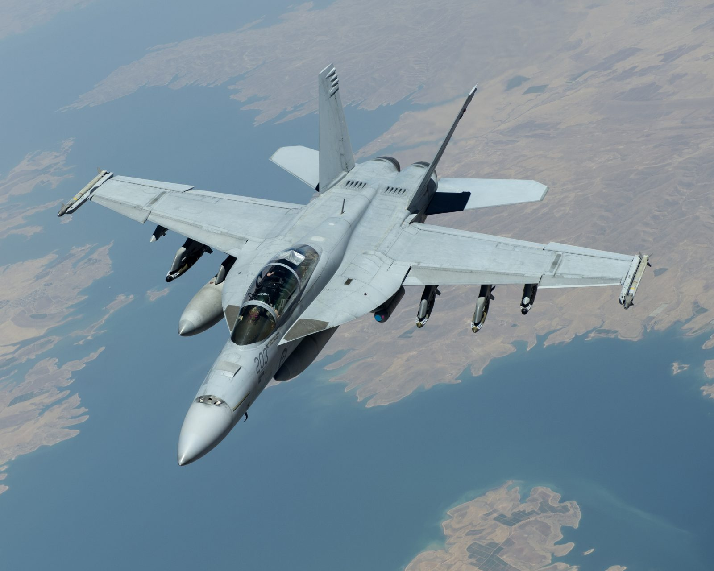

f-18 Hornet

O McDonnell Douglas F/A-18 Hornet é um jato multifunção bimotor, supersônico, feito para todas as condições meteorológicas e baseado em porta-aviões. Designado pela McDonnell Douglas (Atualmente Boeing). O F/A/-18 Hornet é um derivado do YF-17 dos anos 70 utilizado pela Marinha dos Estados Unidos e pelo Corpo de Fuzileiros Navais dos Estados Unidos. O Hornet também é usado pelas Forças Aéreas de várias nações e, desde 1986, pelo Esquadrão de Demonstração de Voo da Marinha Americana, os Blue Angels.
O F/A-18 tem uma velocidade máxima de Mach 1.8 (1.034 nós, 1.190 milhas por hora ou 1.915 km/h a 40.000 pés ou 12.200 metros de altitude) Pode carregar uma vasta variedade de bombas e mísseis, como ar-ar e ar-terra, incluindo um canhão 20mm M61 Vulcan. É alimentado por dois motores General Electric F404 turbofan, o que dá a aeronave uma alta taxa empuxo-peso. O F/A-18 tem excelentes características aerodinâmicas, atribuídas a suas extensões de ponta de asa
As principais funções do F/A-18 são escolta, defesa aérea de frota, supressão das defesas aéreas do inimigo, interdição aérea, suporte aéreo aproximado e reconhecimento aéreo. Sua versatilidade e confiabilidade provaram que o caça é um avião baseado em porta-aviões valioso, embora tenha sido criticado pela falta de alcance e carga útil comparado aos seus companheiros anteriores, como o Grumman F-14 Tomcat nas funções de caça e caça de ataque e o Grumman A-6 Intruder e LTV A-7 Corsair II nas funções de ataque.
proximo